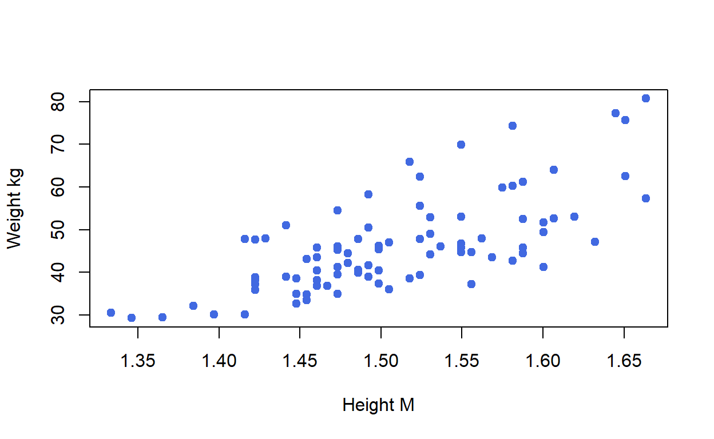
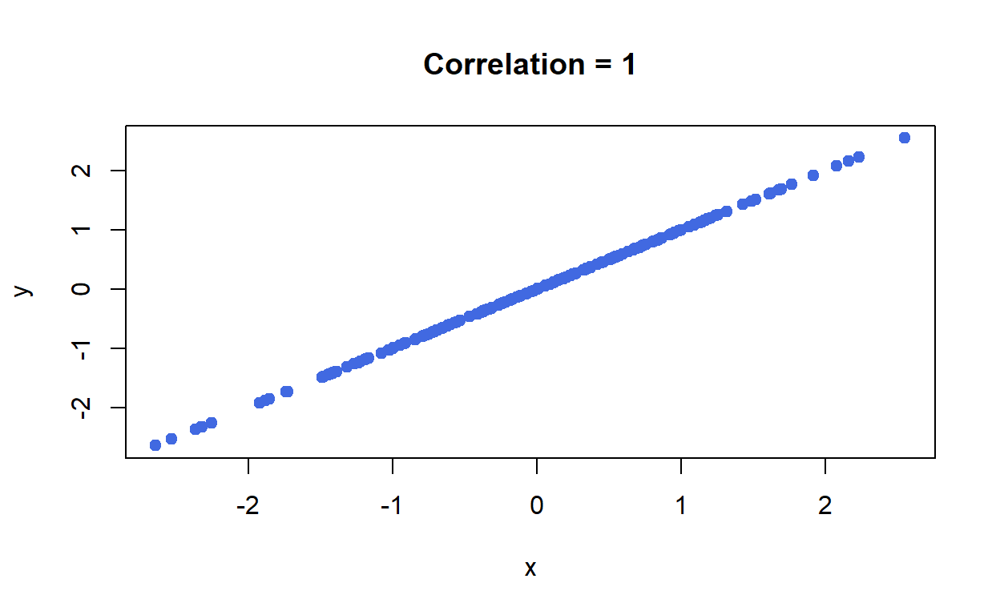
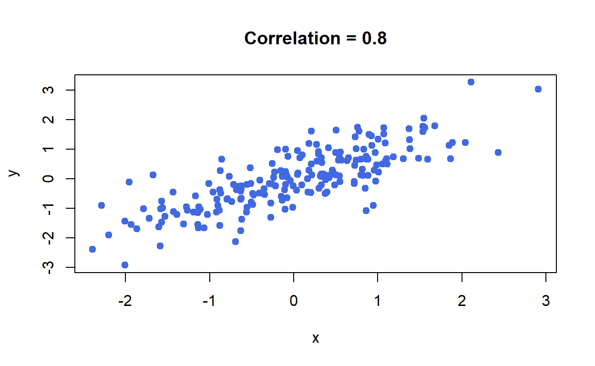
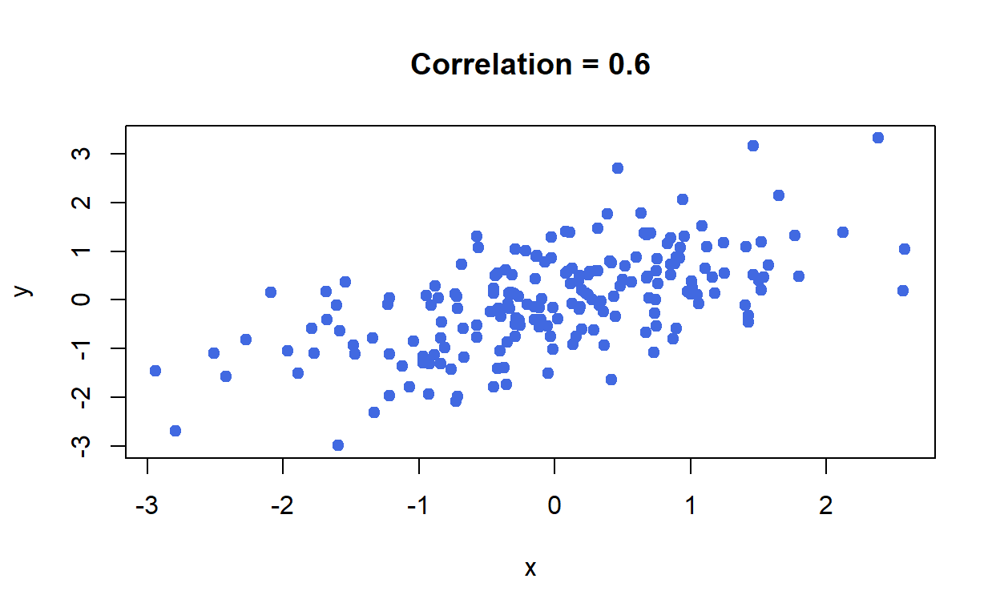
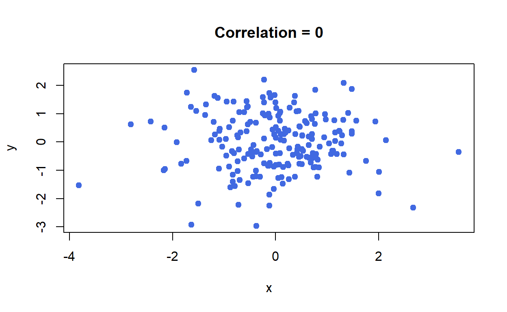
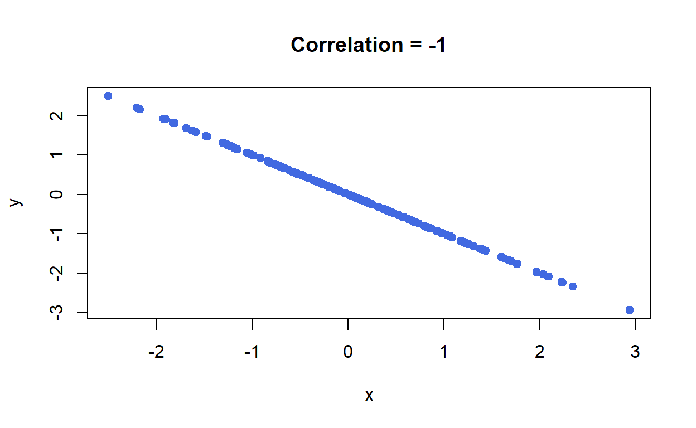
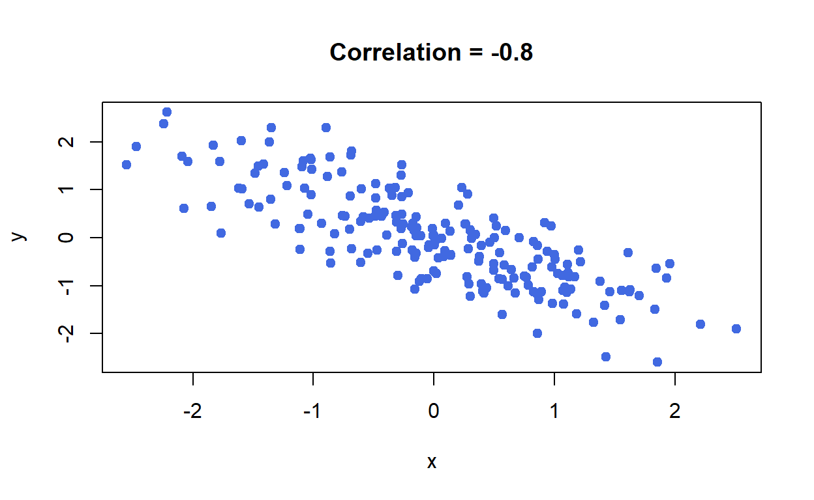
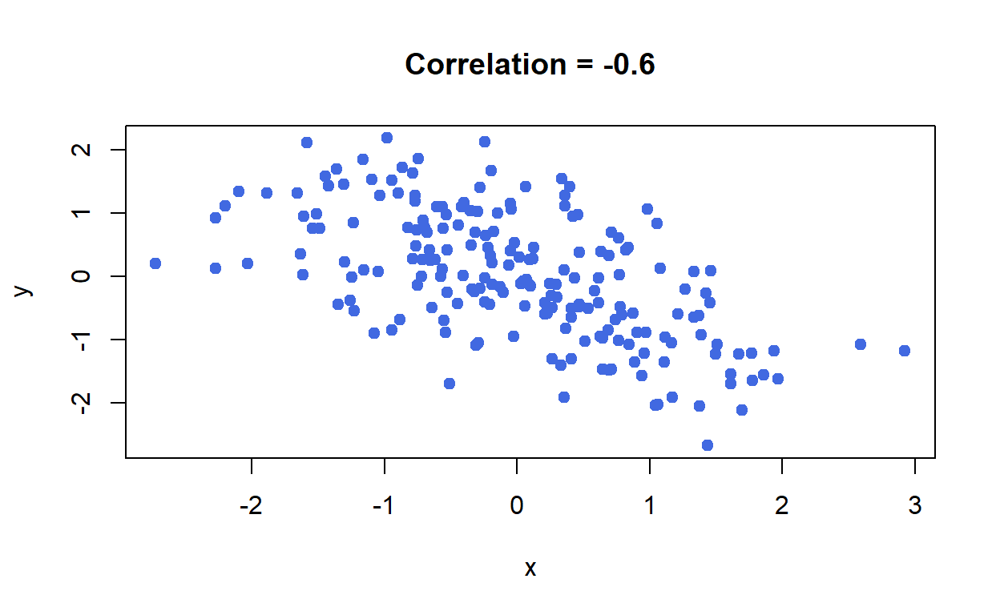
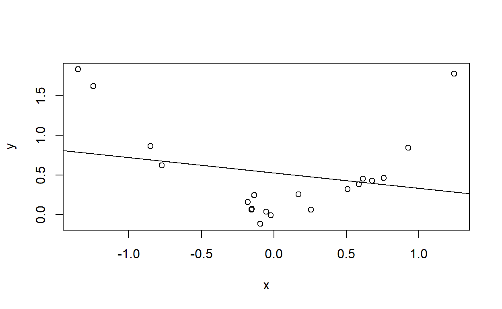

Start by importing the data. The readr package will import the read_csv function, allowing us to pull in the csv from the webpage.
library(readr)
height_weight <- read_csv("https://statisticsbyjim.com/wp-content/uploads/2019/01/HeightWeight.csv") To look at the data, we can use the head function.
head(height_weight)Update the previous function to see the first 8 rows of data.
Hint: For help on this function, try help(head) or ?head.
Next we’ll plot the Height and Weight variables.
plot(height_weight, # basic plot command
xlab = 'Height M', # labels x axis
ylab = 'Weight kg', # labels y axis
pch = 19, # makes circles solid
col = 'royalblue') # sets color
Next we’ll get the correlation between height and weight, as well run a hypothesis test of the correlation.
There are a variety of ways to select columns. We’re using <data.frame>$<variable name>. We have to put the variable name in single quotes because there is a space in the name.
cor(height_weight$`Height M`, height_weight$`Weight kg`)## [1] 0.7050985cor.test(height_weight$`Height M`, height_weight$`Weight kg`)$p.value## [1] 1.744436e-14Used this function
library('MASS')
cor_sim <- function(r = 1.0){
samples = 200
data = mvrnorm(n=samples, mu=c(0, 0), Sigma=matrix(c(1, r, r, 1), nrow=2), empirical=TRUE)
x = data[, 1] # standard normal (mu=0, sd=1)
y = data[, 2] # standard normal (mu=0, sd=1)
plot(x,y, main = paste('Correlation =',round(r,2)), pch = 19, col = 'royalblue')
}cor_sim(1.0)
cor_sim(0.8)
cor_sim(.6)
cor_sim(0)
cor_sim(-1.0)
cor_sim(-.8)
cor_sim(-.6)
x = rnorm(20)
y = x^2 + rnorm(20)/10
cor(x,y)## [1] 0.08401071plot(x,y)
abline(lm(y~x))
#lines(x,predict(lm(y~x + x^2)), col = 'red', lty = 3)